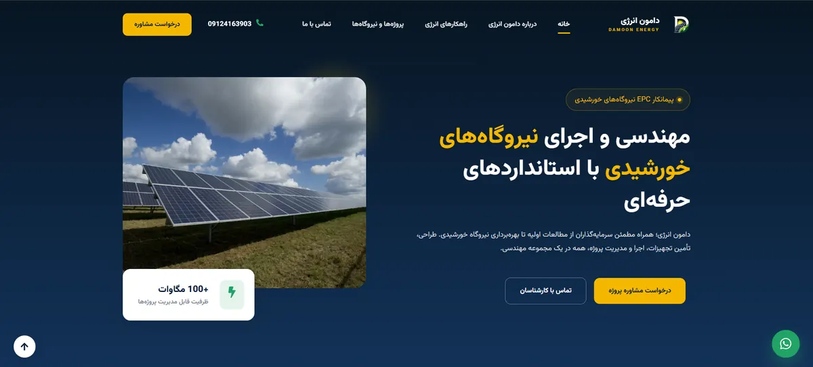
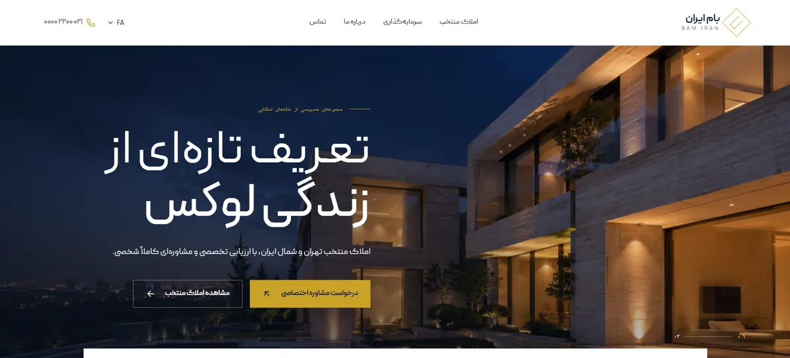
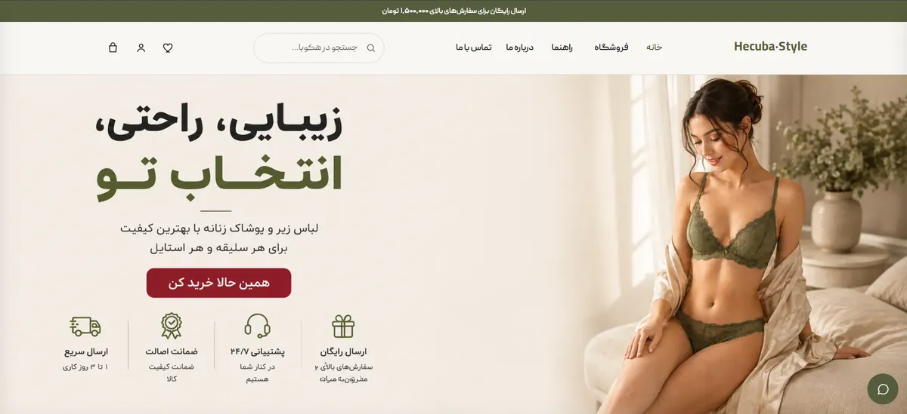
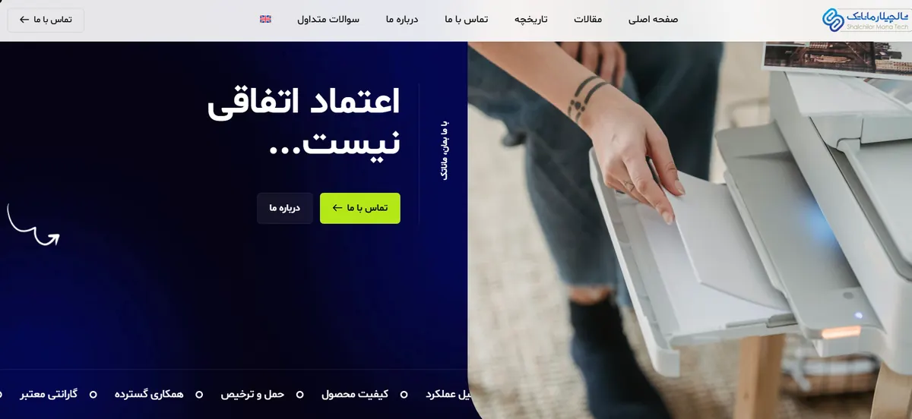
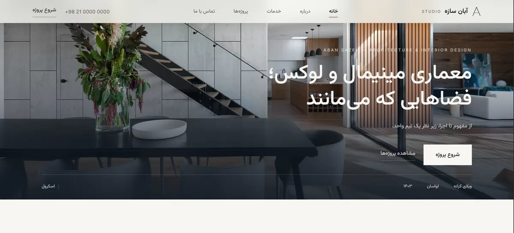

Hamid Zoghi
Front-end developer & custom WordPress builder.
I build fast, custom websites — with code, WordPress, and AI-assisted workflows.
I was fascinated by computers long before I built my first website — taking machines apart, upgrading them, trying to understand what was happening underneath. That curiosity turned into web development at 17, before university, when a friend pushed me to try WordPress.
I chose WordPress on purpose. Despite what some developers assume about it, it still powers a huge share of the web — and paired with custom development and AI-assisted workflows, I think it gets even more capable, not less.
A website isn't just pages that look good — it needs to attract attention, build trust, and help a business actually grow.
Two years in sales and social media taught me that. These days AI is a core part of how I build, and I don't think developers who ignore it will keep up. My path hasn't been a straight line — I've changed direction more than once — but every detour taught me something I couldn't have learned otherwise.
Selected work
A couple of real projects — built end to end, not templated.

Damoon Energy
A corporate website for an energy company, built without relying on ready-made marketplace themes — a custom WordPress theme designed and developed from scratch.
Role: end-to-end development
Visit live site ↗
Bam Iran
A private luxury real estate consultancy for Tehran and northern Iran — curated property listings, an investment section, and a personal consultation flow, built with Next.js and React.
Role: end-to-end development
View preview ↗
Hecuba Style
A women's fashion and lingerie e-commerce brand. The front-end is live as a preview on GitHub Pages while I finish the custom WordPress build — hosting and a domain are next, then it becomes a full working store.
Role: end-to-end development
View preview ↗
Shalchilar Mana Tech
A corporate website built by a small team. I worked on the WordPress core and front-end — including the animated, multilingual interface.
Role: WordPress core & front-end (team project)
Visit live site ↗Currently
What I'm building, learning, and paying attention to right now.
Journey
From website management to front-end development — one step at a time.
-
Jul 2020 – Feb 2021Web Designer & Website ManagerTarrhan Advertising Group, Tehran
Designed and managed the company website, maintained its content and structure, and worked on improving its online presence and day-to-day operations.
-
Jun 2021 – Mar 2022Web Designer & Website ManagerAbzar Mehrad
Designed and developed the company website from scratch, then managed and maintained it — updating content and improving the overall experience.
-
Mar 2022 – Apr 2023Website ManagerArka Abzar
Managed and maintained an e-commerce website — content, structure, day-to-day operations, and support for new sections as the store grew.
-
Sep 2023 – Feb 2026Social Media & Digital Marketing SpecialistBiz — Bazaryaban Iranian Zamin
Worked in sales, social media, and digital promotion — growing Instagram and Rubika pages, running ad campaigns, and building brand visibility, all while freelancing on the side.
-
2023 – Present NowFreelance Web Designer & DeveloperIndependent — full-time since March 2026
Designing and building websites for clients — custom WordPress builds, responsive interfaces, and AI-assisted workflows. Full-time since March 2026, with a focus on custom development over pre-built themes.
Stack
What I actually work with — and what I'm actively picking up.
Experiments
Practice builds — not client work, just me learning by doing.

Aban Sazeh
A practice rebuild using React, outside my usual WordPress workflow — an architecture & interior design studio site, built to get hands-on with a front-end framework I'm still learning.
View project ↗Have an idea worth building?
I'm open to freelance projects first, WordPress developer roles second, and agency collaborations too — realistically, some mix of all three. The fastest way to reach me is email.